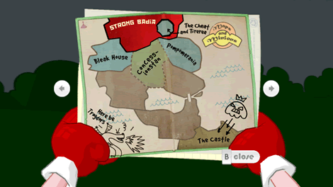

9 |
Scherminterface |
 |
Tijdens het spel heb je toegang tot:
 De Inventaris van Strong Bad laat zien wat Strong Bad bij zich heeft. Selecteer het voorwerp in de inventaris door ernaar te wijzen en druk op

Op de kaart staan de locaties die je kunt bezoeken. Nieuwe locaties worden ontgrendeld op de kaart gedurende het spel, dus controleer het regelmatig! Om naar een nieuwe plaats te gaan, wijs je naar de ontgrendelde locatie en druk je op  Wijs naar de pijlen aan de rechter- en linkerkant van de kaart om door de andere pagina's te bladeren. Hier staat aangegeven hoe fantastisch Strong Bad is (gebaseerd op je prestaties in het spel) en je ziet een lijst met verzamelobjecten die je in de wereld hebt gevonden. Deze voorwerpen zijn niet noodzakelijk om het spel af te maken, maar ze maken het wel leuker, dus let goed op deze pagina's om zeker te weten dat je alles hebt gedaan wat je maar kunt doen! Wijs naar Close onder de kaart en druk op
 In de fotomodus kun je foto's maken op bijna elk moment in het spel. In de fotomodus kun je de volgende dingen doen:
Je kunt deze foto's laten zien aan mensen via Wii-vrienden met de laptop van Strong Bad. |


 |
 |
 |